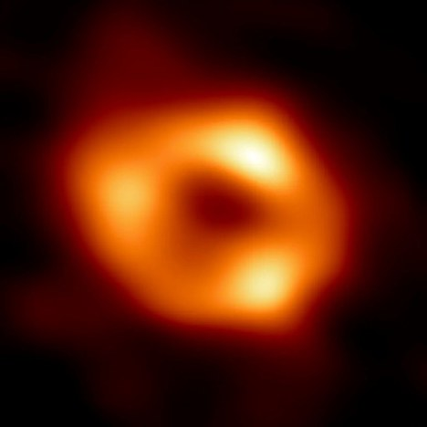

Sagittarius A*
O Sagittarius A*, também conhecido em sua forma abreviada como Sgr A* (pronuncia-se Sagittarius a star), é um buraco negro supermassivo localizado na Via Láctea, mesma galáxia em que vivemos.
Características
O Sagittarius A* possui uma massa equivalente a 4 milhões de sóis e um diâmetro de 23,5 milhões de quilômetros. Não é possível enxergar o buraco negro em si, já que a gravidade é tão forte que nem mesmo a luz consegue escapar.
Localização
Localiza-se no centro da Via Láctea, no ponto central da constelação de Sagitário à aproximadamente 27 mil anos-luz de distância da Terra.
Descoberta do Sagittarius A*
A descoberta do Sagittarius A* teve seu início em 1933, com o auxílio da radioastronomia, quando o engenheiro de telecomunicações Karl Jansky detectou uma emissão de rádio na constelação de Sagitário. Essa fonte de rádio ficou conhecida como Sagittarius A, mas nessa época, não se sabia exatamente o que era ou o que ela representaria de fato.
Com o avanço dos radiotelescópios, foi descoberto que o Saggitarius A correspondia a um conjunto de subcomponentes. Mas só em 1974, os astrônomos Bruce Balick e Robert Brown, observaram, de fato, um desses componentes percebido como brilhante e compacto. A partir daí o Sagittarius A* foi considerado uma descoberta. Seu nome ganhou um asterisco no final por ideia de Brown para destacar que a fonte de rádio não estava em seu estado habitual e sim mais energética, sendo esse um conceito químico aplicado a átomos.
A imagem do Sgr A* foi captada pela primeira vez em 12 de maio de 2022 pelo consorcio internacional de cientistas, Event Horizon Telescope (EHT), que usa dados de oito rádio telescópios que, juntos, funcionam como um único equipamento muito mais poderoso. Apesar de não ser possível visualizá-lo pela forte gravidade que não deixa com que a luz escape, foi possível captar o material acumulado ao seu redor, chamado de “disco de acreção” e a sombra do buraco negro. O que fica visível, portanto, é uma estrutura semelhante a um halo, formada por gás.
O que é um buraco negro?
Um buraco negro é um objeto extremamente denso no Espaço do qual nenhuma luz pode escapar. O nome dessas estruturas se deve à sua capacidade de ter uma gravidade tão forte que prende tudo, até mesmo a luz, debaixo de sua superfície, chamada de horizonte de eventos.
Todos os buracos negros do universo, em algum momento, foram o núcleo de uma estrela gigante. Um buraco negro surge quando uma estrela com mais de oito vezes a massa do Sol chega ao fim de sua vida, colapsa sobre si mesma e toda a massa de seu núcleo se acumula em um único ponto infinitamente pequeno.
Nasce assim um buraco negro. Em seu centro está a singularidade: um ponto que não ocupa espaço e que, mesmo assim, possui uma massa maior do que muitas estrelas. Na região em volta da singularidade, a gravidade é tão intensa que um objeto teria que se mover mais rápido do que a luz para escapar dali. Como isso não é possível, nada é capaz de deixar esta área, nem mesmo a luz, gerando assim uma esfera em volta da singularidade, o horizonte de eventos.
Curiosidades
Origem do nome
O nome Sagittarius A* foi cunhado após o engenheiro de telecomunicações Karl Jansky detectar uma emissão de rádio na constelação de Sagitário. Já o asterisco no final foi usado por ideia de Brown para destacar que a fonte de rádio não estava em seu estado habitual e sim mais energética, sendo esse um conceito químico aplicado a átomos.
Outro buraco negro foi fotografado antes do Sgr A*
A imagem do Sagittarius A* não foi o primeiro registro de um buraco negro. O buraco negro M87* foi fotografado anos antes, em 10 de abril de 2019, pelo Event Horizon Telescope que também foi responsável pela imagem do Sagittarius A*. É importante ressaltar que o M87* não faz parte da nossa galáxia.
O Sagittarius A* é um perigo para a Terra?
Embora Sgr A* tenha massa de 4,31 milhões de sóis, não há nenhuma chance de ameaçar a Terra. Na verdade, ele não capturou nem mesmo as estrelas S, as mais próximas do centro galáctico.
A distância entre o Sistema Solar e o Sagittarius A* é de 26 mil anos-luz. Isso tem outra implicação: a “luz” (ondas de rádio e raios-X) que os astrônomos capturam do buraco negro leva 26 mil de anos para chegar até nós. Ou seja, estamos vendo como ele era naquela época.
O poder gravitacional de um buraco negro é impressionante, mas não o suficiente para engolir matéria relativamente distante. Isso revela que os buracos negros não são “aspiradores cósmicos”, como se imagina. Eles são apenas objetos que se tornaram compactos demais e, portanto, densos o suficiente para “segurar” gravitacionalmente coisas que atravessam o horizonte de eventos.
Buracos negros fazem barulho?
Referências
Abaixo você pode conferir uma grande variedade de sites que contribuíram para que essas informações estivessem compiladas neste perfil. Somos apenas um grupo de curiosos a respeito desse corpo celeste que possui o interesse de divulgá-lo a mais pessoas, porém os verdadeiros conhecedores do tema estão presentes nos links a seguir. Você pode acessá-los e ver na íntegra esse conteúdo para ajudar a expandir seu conhecimento a respeito do Sagittarius A* e buracos negros, se assim você desejar.
Centro Brasileiro de Pesquisas FísicasBritannica
Canaltech: Sagittarius A*
Canatech: Telescópio que fotografou buraco negro
UFMG
CNN Brasil
National Geographic